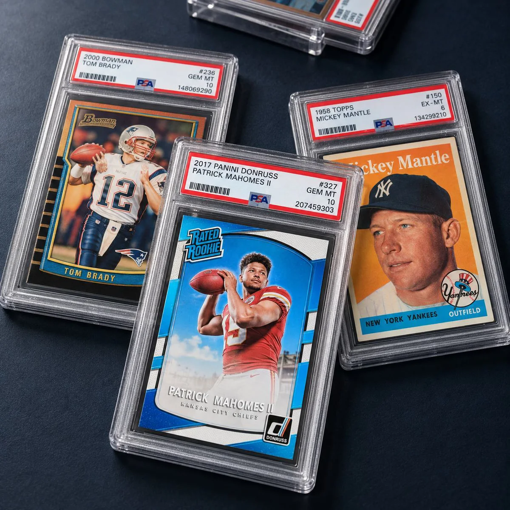

About CardsIQ
The hobby grew faster than its infrastructure.
Live commerce changed how cards are bought and sold. Breaks created new transaction flows.
CardsIQ is building the connective layer underneath it.

On the label
- Card
- 1958 Topps Mickey Mantle #150
- Grade
- PSA 4 VG-EX
- Cert
- 69974937
Why CardsIQ exists
A fragmented hobby. A unified future.
Inventory now moves constantly between platforms, products, buyers, and businesses, while much of the operational layer still lives across disconnected tools.

Operating principles
Built to keep context moving.
-
Connected by default
Information created in one workflow should remain useful in the next.
-
Card-level traceability
Every card should carry its operational history.
-
Liquidity in commerce
Selling a card should not require starting an entirely new process.
-
Infrastructure, not a silo
CardsIQ is built to work across the hobby ecosystem.
- Cert data
- PSA · BGS · SGC
- Market data
- ALT + Card Ladder
- Live commerce
- Whatnot · TikTok LIVE
- Built on CardsIQ
- HG Breaks · Rogue Rips

Cards change hands.
Cards move between collectors, breakers, shops, and buyers every day. The record should move with them.
Why persistent identity matters
One card. One record. Every movement.
 Cert #103207853
2023 Donruss Optic Joe Burrow Downtown! #D4, statuses in order:
Available
Assigned
Offer Sent
Completed
Cert #103207853
2023 Donruss Optic Joe Burrow Downtown! #D4, statuses in order:
Available
Assigned
Offer Sent
Completed
Illustrative record · CardsIQ status labels
Built across the hobby
- Collectors
- Breakers
- Card shops
- Show vendors
- Repack businesses
- Marketplaces
Card identity, transaction history, pricing context, and operational state stay connected as inventory moves through CardsIQ.
For hobby businesses
Operate the business.
Tools to power your entire operation, from inventory to fulfillment.
- Inventory
- Live Commerce
- Buybacks
- Product Creation
- Fulfillment
- Operations
For collectors
Stay connected to the card.
A better, more informed collecting experience.
- Cards
- Offers
- Ownership
- Transactions
- Wallet
- Break History
One operating system for the modern hobby.
Connect the people, cards, transactions, and operational workflows that make modern collectibles commerce move.